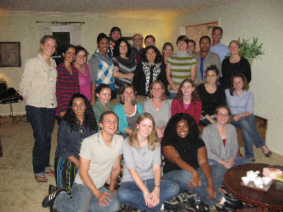

The Developmental Area
This site provides information about graduate study and research training in developmental psychology at Penn State.
Graduate study in the Developmental Psychology at Penn State provides students with comprehensive training in theory, methods, and empirical study of the processes and mechanisms of developmental change from infancy to adolescence. Separate pages on this site describe the research interests of our faculty, information about current postdocs and graduate students, and details about our training program. If you are considering graduate study in developmental psychology, we encourage you to explore this site to learn more about our program and our faculty's particular areas of expertise. Graduate applications are due December 1, and we encourage prospective students to contact faculty members by email if they have questions or want more information about the program.
We offer training in several thematic areas described in more detail on the Themes page: